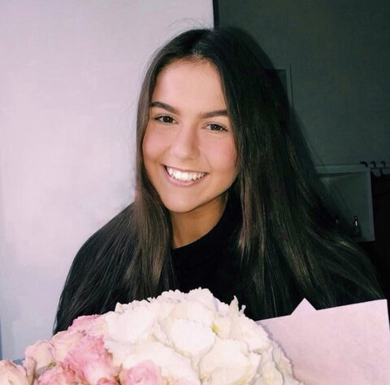

About Palina Skakun
Against all odds, I turned my dreams into reality through unwavering dedication and hard work! Originally from Belarus, I have always felt a strong connection to the United States and its vibrant tech scene. I was on the hunt for my next big adventure when a risky opportunity came knocking. After months of hard work, I made the journey across the world to Michigan, and now I am thrilled to be studying Computer Science, Engineering, and Math at Michigan State University and exploring the endless possibilities that the tech industry has to offer. Who knows where this wild ride will take me, but I'm ready for whatever comes my way! I'm currently a second-year CSE student at MSU with a passion for problem-solving, cybersecurity, and making a positive impact through technology. With a strong foundation in math and a natural aptitude for critical thinking, I am eager to take on new challenges and push the boundaries of what is possible. I believe that technology has the power to transform lives and create a better future for us all, so I am beyond excited to contribute to that change!
I take great pride in being the first person in my family to move to the USA! This experience has taught me the value of bravery and living up to my full potential. It has inspired me to push beyond my limits and strive for excellence in all that I do. When I'm not coding up a storm, you might catch me: ice skating, reading science fiction or fantasy books, eating Lo Mein, doing yoga, or having long conversations about all sorts of things with friends! I’m always looking forward to an insightful conversation so I would love to connect. Let's work together to make the world a better place and have fun along the way!
- I'm from Mogilev, Belarus
- I love dancing
- I want to be a software engineer after graduation